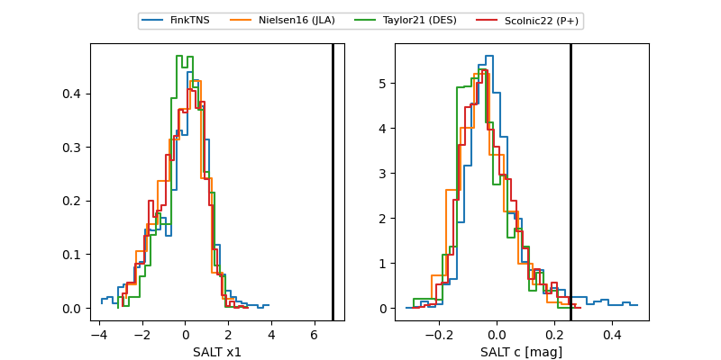

FINK: ZTF25abnkfdd
Lasair: ZTF25abnkfdd
ALeRCE: ZTF25abnkfdd
TNS: 2025wme
YSE: 2025wme
ZTF25abnkfdd (ztf,fink)
2025wme (tns,yse)
equatorial (ra, dec) = (121.7858,+14.26191)
galactic (l, b) = (208.1985,+23.08564)

last atlasc=18.84, ztfr=18.44
2 atlasc, 29 ztfr detections